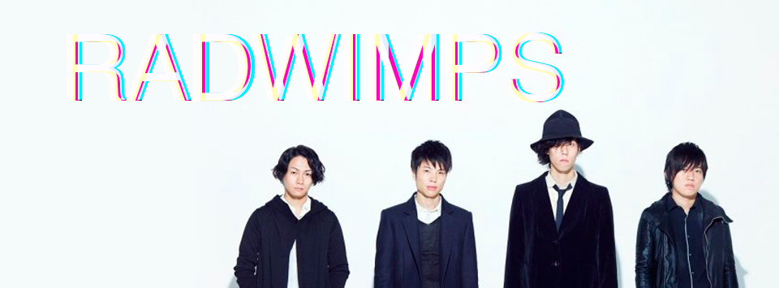
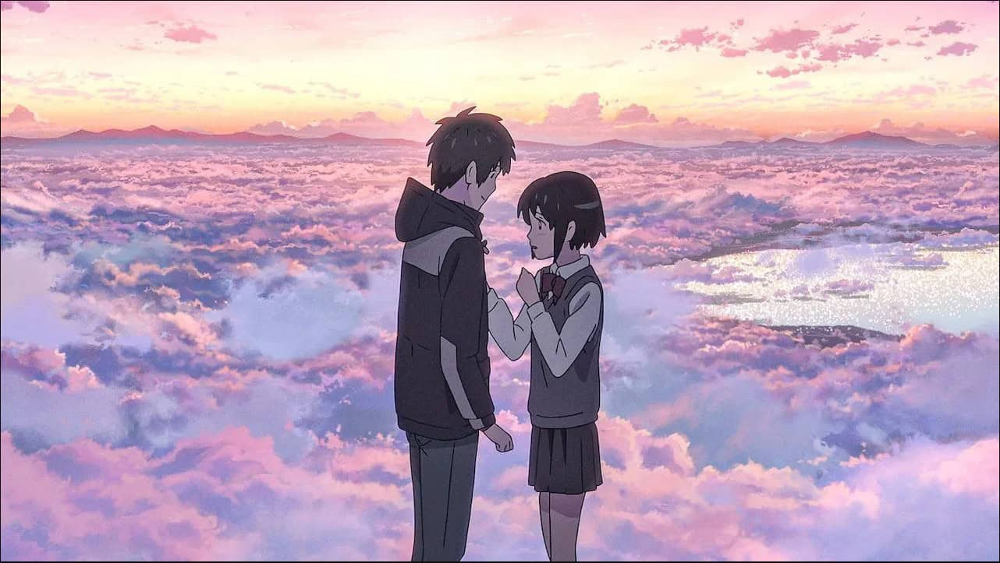

O filme em detalhes
Antes de conhecer o que aconteceu por trás da produção, vale entender algumas das principais informações sobre Your Name.
| Informação | Detalhe |
|---|---|
| Título original | 君の名は。 — Kimi no Na wa. |
| Lançamento no Japão | 26 de agosto de 2016 |
| Duração | 107 minutos |
| História, roteiro e direção | Makoto Shinkai |
| Produção da animação | CoMix Wave Films |
| Distribuição | TOHO |
| Direção de animação | Masashi Ando |
| Design de personagens | Masayoshi Tanaka |
| Música | RADWIMPS |
As pessoas e ideias que deram vida a Your Name
Passe o mouse sobre cada imagem para descobrir um pouco mais sobre quem ajudou a construir a identidade do filme.
-
01
Makoto Shinkai
Criador da história, roteirista e diretor de Your Name. Foi ele quem deu ao filme esse tom emocional, delicado e marcante.
-
02
CoMix Wave Films
Estúdio responsável pela animação do filme, ajudando a criar os cenários, as cidades e a identidade visual tão bonita da obra.
-

03RADWIMPS
A banda responsável pela trilha sonora de Your Name, deixando muitos momentos ainda mais emocionantes e inesquecíveis.
-

04Design e animação
O design dos personagens e a animação ajudam a transformar sentimentos e pequenos momentos em algo visualmente especial.
Como as diferentes partes se encontram
História, animação e música passam por caminhos diferentes antes de finalmente se encontrarem na tela.
-
01
HISTÓRIA
A ideia ganha forma
Makoto Shinkai desenvolve a história, trabalha o roteiro e conduz a direção do projeto.
-
02
VISUAL
Personagens e animação
Design, cenários e animação começam a transformar aquilo que estava escrito em pessoas, lugares, cores e movimento.
-
03
MÚSICA
O som encontra a imagem
A música do RADWIMPS acrescenta ritmo e emoção às imagens, tornando-se uma parte importante da identidade do filme.
-
04
LANÇAMENTO
Your Name chega aos cinemas
Depois de reunir história, imagens, movimento e música, Your Name estreou nos cinemas japoneses em 26 de agosto de 2016.
Uma história bonita também é feita de tudo aquilo que acontece antes da tela acender.
Agora que você conhece um pouco do que existe por trás de Your Name, talvez alguns detalhes do filme passem a parecer ainda mais especiais.
← Voltar para Your Name